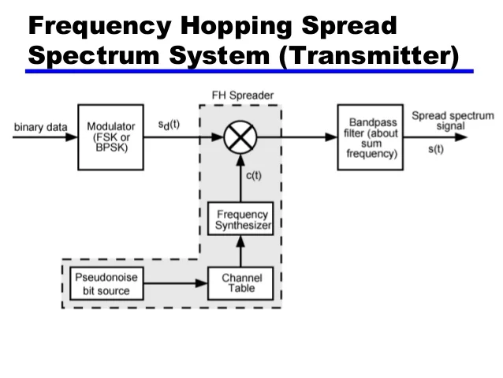

WT
Difference between FDMA, TDMA and CDMA
| Parameter | FDMA | TDMA | CDMA |
|---|---|---|---|
| Full form | Frequency division multiple access | Time division multiple access | Code Division Multiple Access |
| Division Method | Frequency Division | Time Division | Code Division |
| Allocated Bandwidth | 12.5MHz | 12.5MHz | 12.5MHz |
| Required channel bandwidth | 0.03MHz | 0.03MHz | 1.25MHz |
| No. of RF Channels | ${12.5 \over 0.03} = 416$ | ${12.5 \over 0.03} = 416$ | ${12.5 \over 1.25} = 10$ |
| Code word | Not required | Not required | required |
| Flexibility | Little flexiable | Moderate flexiable | Highly flexiable |
| Multiplexing | Frequency | Time | Code |
| Bandwidth Allocation | Dedicated frequency band | Time slots in frequency band | Entire frequency band |
| User Separation | Different frequencies | Different time slots | Different codes |
| Synchronization | Not required | Required | Not required |
| Spectral Efficiency | Lower | Higher | Highest |
| Capacity | Lower | Higher | Highest |
| Multipath Interference | Higher | Lower | Lowest |
| Power Efficiency | Higher | Lower | Lowest |
| Examples | AMPS, TACS | D-AMPS, GSM | IS-95, CDMA2000, WCDMA |
What are different modulation technique?
Amplitude modulation

It is a type of modulation in which only the amplitude of the carrier signal is varied to represent the data being added to the signals whereas the phase and the frequency of the signal are kept unchanged.
Frequency modulation

It is a type of modulation in which only the frequency of the carrier signal is varied to represent the frequency of the data whereas the phase and the amplitude of the signals are kept unchanged.
Phase modulation

It is a type of modulation in which the phase of the carrier signal is varied to represent the data being added to the signal. Different information values are represented by different phases. For example: ‘1’ may be represented by 0° while ‘0’ by 180°.
Explain DSSS(Direct Sequence Spread Spectrum)
Direct Sequence Spread Spectrum (DSSS) is a spread-spectrum modulation technique used in wireless communication to enhance signal integrity, resist interference, and provide secure data transmission.
DSSS Transmitter

- Input data is converted into bipolar NRZ format
- This NRZ signal is then given to mixer along with wideband Mixer along with wideband PN code.
- EX-OR operation is performed on this two signals & the output is given to PSK modulator.
- This output of two multiplier is known as spreading code.
DSSS Rreceiver

- The receiver in a DSSS system correlates the received signal against the chipping code to de-spread and extract the original data.
- By using the same chipping code as the transmitter, the receiver can accurately recover the transmitted data, even in the presence of noise or interference.
- The receiver's ability to de-spread the signal based on the known chipping code ensures reliable data reception and maintains signal integrity throughout the communication process.
FHSS(Frequency Host Spread Spectrum)
Frequency-Hopping Spread Spectrum (FHSS) is a method used in wireless communication to transmit radio signals by rapidly changing the carrier frequency.
The transmitter and receiver in an FHSS system work together to ensure secure and efficient communication
It purpose is to avoid interference, prevent eavesdropping, and enable code-division multiple access communications.
Transmitter:

- For data modulation, MFSK modulator is used and frequency hopping is carried out by the frequency synthesizer.
- The output from the Frequency synthesizer and modulated user input given to the mixer.
- The output of the mixer is then given to the Band-pass filter and at the output we get FH Sperader / MFSK signal.
Receiver:

- At the receiver, the signal is first mixed with output of frequency synthesizer.
- Mixer removes the frequency hopping in received signal.
- The output of mixer given to the band pass filter and turn to the non-coherent detection.
Architecture of CDMA2000

CDMA2000 is a set of 3G mobile technology standards used to transmit speech, data, and signaling data between mobile phones and cell sites.
- Base Transceiver Station (BTS): Responsible for communicating with mobile phones through radio transmitters, receivers, and antennas.
- Base Station Controller (BSC): Manages a group of BTSs, handling call handovers and radio channel setup.
- Mobile Switching Center (MSC): Routes calls, manages call setup, and controls handovers between cells.
- Packet Data Serving Node (PDSN): Acts as a gateway between cellular systems and the IP packet data network, facilitating data transmission.
- Home Agent (HA): Manages mobility and security functions for mobile users.
- Interworking Function (IWF): Facilitates communication between different networks.
- AAA Server: Provides authentication, authorization, and accounting functions for network access.
- Home Location Register (HLR): Stores subscriber information, including current location and activity status.
- Home Agent: Used for location tracking of user.
Router: It function is to route the packet within various network elements.
GSM architecture

The GSM network architecture consists of several key components that work together to enable mobile communication services:
- Mobile Station (MS):
- This is the mobile device itself, which connects to the network via hardware.
- It includes the Subscriber Identity Module (SIM) card that provides identifying information about the mobile user.
- Base Station Subsystem (BSS):
- Responsible for communicating with mobile phones through radio transmitters, receivers, and antennas.
- It comprises two main elements:
- Base Transceiver Station (BTS): Contains the equipment that communicates with mobile phones, including radio transmitters, receivers, and antennas.
- Base Station Controller (BSC): Controls a group of BTSs, managing call handovers and radio channel setup.
- Network Switching Subsystem (NSS):
- Also known as the core network, the NSS tracks the location of callers to facilitate the delivery of cellular services.
- It includes various components such as:
- Mobile Switching Center (MSC): Routes calls and SMS, manages call setup, and controls handovers between cells.
- Home Location Register (HLR): Stores subscriber information, including current location and activity status.
- Visitor Location Register (VLR): It stores details like the location area identity, mobile subscriber identity, and services subscribed to by the mobile user.
- Authentication Center (AUC): The AUC is a vital security component in the GSM architecture that authenticates and validates the identity of mobile subscribers.
- Equipment Identity Register (EIR): The EIR is a database that stores information related to the International Mobile Equipment Identity (IMEI) numbers of mobile devices.
- Operation and Support Subsystem (OSS):
- The OSS is responsible for monitoring and controlling the GSM network.
- It includes functions like administration, security management, network configuration, and maintenance tasks.
- The OSS provides support for operational and maintenance activities required for the GSM network.
Explain 4G network architecture

The LTE network architecture comprises of following three main components.
- User Equipement(UE): The internet architecture of the user equipment for LTE is identical to the one used by GSM whtich is actually a Mobile Equipment(ME).
- The Mobile Equipment comprised of the following important modules:
- Mobile Termination (MT) : This handles all the communication functions.
- Terminal Equipment (TE) : This terminates the data streams.
- The Mobile Equipment comprised of the following important modules:
- Evolved UMTS Terrestrial Radio Access Network: Handles the radio communication between the mobile and the evolved base stations called eNodes & eNS
- The Evolved Packet Core (EPC): It is a framework for providing converged voice and data on a LTE network.

Cells splitting
Cell Splitting Easiest Explanation Ever With Scenario /Example : Mobile Communication

It is a method of subdividing the congested cell into smaller cells, each within its own base station following a decrease in the transmitter power and the height of the antenna.
The parent cell that was originally congested is called as "macrocells" and the smaller cells are called "microcells".
Cell Spitting hierachy:
- Macrocell
- Mostly used in rural areas to cover longer distances and traffic is less.
- Microcell
- Macrocells are further divided into microcells with smaller radii in higly populated areas by cell splitting.
- Picocell
- These cells genrally cover a smaller area such as in building.
- They are used for improving indoor coverage.
- Femtocell
- A femtocell is a small cellular device base station designed for use in residential or small business enviroments.
Advantages
- Number of channels per unit area increase or maximize.
- System capacity increase.
- Antenna height is reduced.
- Transmitter power is reduce or minimize. Disadvantage
- Number of base station increases.
- Overall lost of the system increases.
Cells sectoring
The co channel interference in cellular system may be decreased by replacing a single omni-directional antenna, at the base station by several directional antenna, each radiating within a specified sector.
By reducing the cell radius R and keeping the same co-channel reuse ration $D \over R$.

Types of Cells Sectioning

Evolution 1G to 5G
- 1G (First Generation):
- Introduction: 1G, the first generation of mobile communication technology, emerged in the 1980s as an analog system primarily supporting voice services.
- Capabilities: It allowed basic voice calls but lacked data services and internet connectivity.
- Speed: Provided an information transfer speed of up to 2.4 kilobytes (KB) per second.
- 2G (Second Generation):
- Introduction: 2G, introduced in the early 1990s.
- Enhancements: It offered increased confidentiality, higher system capacity, and the ability to access the internet and send text messages.
- Technology: 2G operated at a greater range over a 15-20 MHz bandwidth, improving call clarity and data services.
- Speed: Provided an information transfer speed of up to 50 kilobytes (KB) per second.
- 3G (Third Generation):
- Introduction: 3G emerged in the early 2000s.
- Capabilities: Users could browse the web, send emails, and use advanced data-based applications.
- Speed: Provided an information transfer speed of up to 3 megabytes (MB) per second.
- 4G (Fourth Generation):
- Introduction: 4G, rolled out in the late 2000s, represented a significant leap in mobile technology with faster data speeds and lower latency.
- Features: It supported high-definition video streaming, online gaming, and video conferencing, enhancing user experiences.
- Speed: Provided an information transfer speed of up to 36 MB per second.
- 5G (Fifth Generation):
- Introduction: 5G, the latest mobile network technology, offers significantly faster data transfer rates, reduced latency, and increased network capacity.
- Key Features: 5G enables technologies like Internet of Things (IoT), augmented reality (AR), virtual reality (VR), and ultra-high-definition video streaming.
- Speed: Offers theoretical maximum information transfer speeds of up to 10 gigabits per second (Gbps), significantly faster than 4G.
Edge, GPRS, UMTS

- Edge (Enhanced Data Rates for GSM Evolution):
- Description: Edge, also known as 2.75G, is a digital mobile phone technology that enhances data transmission rates as an extension of GSM.
- Speed: Edge offers higher bit rates per radio channel, resulting in a threefold increase in capacity and performance compared to ordinary GSM/GPRS connections.
- Features: It delivers higher data rates, making it suitable for packet-switched applications like internet connections.
- Implementation: Edge is a superset to GPRS and can function on any network with GPRS deployed, requiring no hardware or software changes in GSM core networks.
- GPRS (General Packet Radio Service):
- Description: GPRS is a packet-based service for data transmission in GSM networks, providing a permanent connection to devices.
- Speed: GPRS allows for data transmission rates of up to 20-40 Kbps, making it suitable for early mobile websites.
- Features: It is packet-oriented, converting data into individual packets for transmission and reassembly at the receiver.
- Billing: GPRS billing is based on the quantity of data transferred rather than connection time, offering more flexibility in data usage.
- UMTS (Universal Mobile Telecommunications System):
- Description: UMTS is a 3G standard that follows GSM, offering higher data rates and supporting simultaneous voice and data services.
- Speed: UMTS delivers symmetric data rates of up to 384 Kbps for handsets, significantly higher than 2G technologies.
- Features: It uses new spectrum at 2GHz, enabling a greater number of digital voice calls and supporting dual-transfer mode for voice and data services.
- Deployment: UMTS represents a generational leap in mobile communication, providing operators with increased capacity and improved service offerings.
What is wireless communication advantages and disadvantages?

Wireless communication refers to the transmission of data or information between devices without the use of physical connections like wires. It utilizes electromagnetic waves to transmit and receive data or voice, enabling communication over short or long distances.
Advantages of Wireless Communication:
- Flexibility: Wireless networks offer flexibility and adaptability compared to wired networks, allowing users to connect from various locations within the network's coverage area.
- Cost-effectiveness: Wireless networks are relatively cheaper to install and maintain compared to wired networks, making them a cost-effective solution for businesses.
- Global Coverage: Wireless networks provide global reach, extending connectivity to areas where wired connections are not feasible, such as rural regions or battlefields.
- Mobility: Wireless networks are mobile and portable, allowing users to carry and re-install them in different locations easily.
- Low Maintenance: Wireless communication systems generally have low maintenance costs, reducing operational expenses. Disadvantages of Wireless Communication:
- Security Concerns: Wireless communication is less secure than wired communication, making it vulnerable to hacking and unauthorized access.
- Unreliability: Wireless networks can be less reliable than wired networks, leading to potential connectivity issues.
- Interference: Wireless networks are more susceptible to interference from other devices, affecting signal quality and performance.
- Limited Bandwidth: Wireless networks have a limited bandwidth, restricting the number of users or devices that can be supported simultaneously.
- Network Security: Wireless networks are prone to breaches in network security, posing risks to data privacy and confidentiality.